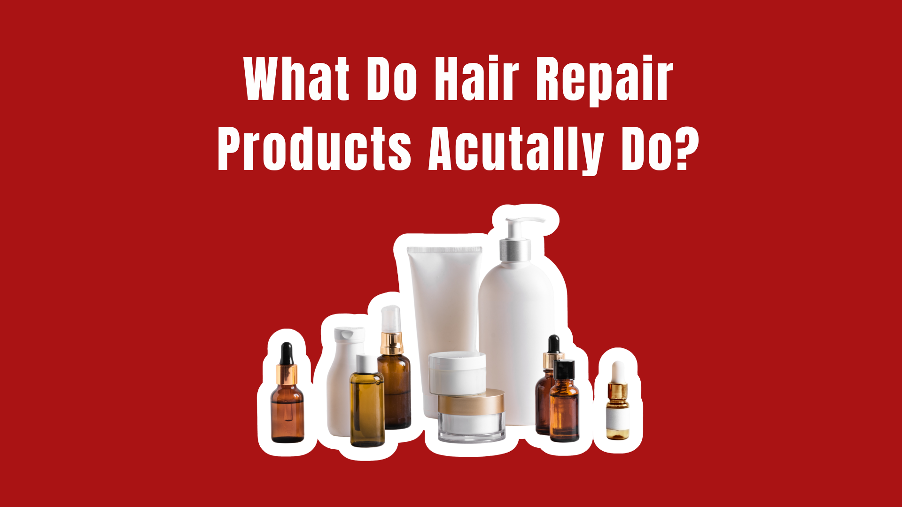

You’ve probably seen it everywhere.
You see it on shampoos, masks, leave-ins, oils, bond builders, serums, conditioners, and basically anything marketed toward people who bleach, straighten, curl, color, or heat-style their hair.
And it sounds completely reasonable.
Your hair is damaged. You buy a repair product. The product repairs it. Your hair is fixed.
Except there is one fairly important problem with that story:
Hair is not living tissue.
Once the hair shaft grows out of your scalp, the visible part of your hair is made primarily of keratinized cells. It doesn’t have the biological machinery necessary to heal itself the way skin does after a cut.
So when a bottle says it “repairs” your hair, what exactly is being repaired?
The answer is a lot more interesting than the marketing makes it sound.
The Industry’s Favorite Little Word: “Repair”
The beauty industry loves the word repair because it makes a cosmetic effect sound almost medical.
If your hair is dry, rough, frizzy, or breaking, “repair” suggests that something underneath the surface has been restored.
But there is a major difference between making damaged hair behave better and reversing the damage that already happened.
Imagine a sweater with a pulled thread.
You can smooth the fabric. You can reinforce it. You can coat it with something that makes it feel stronger.
But you can’t make the original fibers magically return to exactly how they were before they were damaged.
Hair is similar.
Once the cuticle has been chipped, lifted, worn down, or chemically altered, a conditioner cannot make the hair shaft biologically regenerate.
That doesn’t mean repair products are useless.
It means the word repair needs some translation.
What Actually Happens When Hair Gets Damaged?
Before understanding repair products, you have to understand what they’re repairing—or, more accurately, what they’re compensating for.
Your hair shaft has three main structural components:
- The cuticle — the outer protective layer made up of overlapping scales.
- The cortex — the thick inner layer responsible for much of the hair’s strength, elasticity, and pigment.
- The medulla — a central core that is present inconsistently and is not considered essential to hair’s basic structure.
The cuticle is particularly important when we’re talking about damage.
Healthy cuticles lie relatively flat along the hair shaft. Chemical processing, heat, friction, UV exposure, and mechanical stress can roughen or lift them.
That is when hair starts doing things consumers immediately recognize:
- It feels rough.
- It tangles more easily.
- It looks dull.
- It becomes frizzy.
- It loses elasticity.
- It breaks more easily.
- Split ends become more noticeable.
The hair isn’t “sick.”
It’s physically damaged.
And that distinction matters.
So What Does Conditioner Actually Do?
This is where things get slightly less glamorous.
One of the most effective things a conditioner can do is simply make damaged hair easier to handle.
Conditioning ingredients can deposit onto the hair surface, reduce friction, improve slip, and make individual strands slide past one another more easily.
That means fewer tangles. Less friction. Less aggressive brushing. And potentially less breakage during everyday handling.
Silicones are particularly good at this.
Ingredients such as dimethicone can form a thin film over the hair surface that makes strands feel smoother and look shinier.
Does that mean the silicone has “healed” the hair?
No.
But if the hair is smoother, less tangled, and better protected from friction, that can still be genuinely useful.
This is one of the biggest misunderstandings surrounding hair repair products:
A product doesn’t have to reverse damage to make damaged hair perform better.
Myth #1: “Repair Products Rebuild Your Hair”
Verdict: Misleading
Some products can interact with damaged areas of the hair and improve its mechanical properties. But that is not the same thing as rebuilding an entire strand from scratch. Hair doesn’t contain living cells capable of regenerating the damaged structure.
Certain ingredients marketed as bond builders are designed to interact with chemical structures within the hair, particularly after processes such as bleaching.
These products may reduce breakage or improve the feel and appearance of chemically treated hair.
That’s meaningful.
But “reduces damage” and “reverses damage” are not interchangeable claims.
And neither means your hair has literally returned to its pre-damage state.
Myth #2: “If Your Hair Feels Healthy, It’s Healthy”
Verdict: Your Fingers Are Not a Laboratory
The sensation you’re experiencing is largely a reflection of the hair’s surface properties. Conditioning agents can make rough hair feel smoother. None of that necessarily means the underlying structural damage has disappeared.
This one is particularly easy to fall for.
You use a deep-conditioning mask. Your hair feels soft. You run your fingers through it. Suddenly, your hair feels completely transformed.
It is tempting to assume the hair itself has been restored.
But the sensation you’re experiencing is largely a reflection of the hair’s surface properties.
Conditioning agents can make rough hair feel smoother. Oils can increase lubrication. Film-forming ingredients can reduce friction and add shine.
None of that necessarily means the underlying structural damage has disappeared.
This is why a heavily damaged strand can sometimes feel incredible immediately after a conditioning treatment.
The product has changed how the strand behaves.
It hasn’t resurrected the original hair fiber.
Myth #3: “Split Ends Can Be Permanently Repaired”
Verdict: No. Absolutely Not.
Once a hair has split at the end, there is no cosmetic product that permanently fuses that strand back into its original condition. The only permanent way to remove a split end is to cut it off.
This is probably the clearest example of where hair marketing gets creative.
Once a hair has split at the end, there is no cosmetic product that permanently fuses that strand back into its original condition.
Some products can temporarily coat the damaged area and make split ends appear smoother or less obvious.
They can reduce friction between the damaged fibers.
They can make the ends look significantly better.
But the split itself hasn’t biologically healed.
The only permanent way to remove a split end is to cut it off.
Which is not particularly exciting marketing for a $38 “split-end repair serum.”
So the bottle says:
The reality is closer to:
Not quite as sexy. Much more accurate.
Myth #4: “More Repair = More Healthy Hair”
Verdict: Not Necessarily
More products do not automatically mean healthier hair. Some hair benefits enormously from conditioning and protective ingredients. Other hair may become weighed down, coated, or simply overwhelmed by layers of products.
Once consumers hear that their hair is damaged, the natural response is to buy everything labeled “repair.”
Repair shampoo. Repair conditioner. Repair mask. Repair serum. Bond-building treatment. Overnight repair treatment. Repair oil. Repair spray.
Suddenly your shower looks like a small-scale hair laboratory.
But more products do not automatically mean healthier hair.
Some hair benefits enormously from conditioning and protective ingredients. Other hair may become weighed down, coated, or simply overwhelmed by layers of products.
And sometimes the most effective damage-prevention strategy isn’t another repair treatment.
It’s creating less damage in the first place.
- Lowering unnecessary heat.
- Being gentler when detangling.
- Avoiding excessive chemical processing.
- Protecting hair from environmental exposure.
- Giving chemically treated hair appropriate conditioning.
- Trimming severely split ends.
The boring answer is often the useful one.
What “Repair” Products Are Actually Doing
Here’s the beauty-industry translation:
None of this means these products are scams.
Actually, many of them can be extremely good at what they’re designed to do.
The problem is that cosmetic improvement gets translated into biological repair.
And those are two very different things.
The Bond-Building Exception
This is where things get particularly interesting.
Bond-building products aren’t simply fancy conditioners with a new name.
Hair contains different types of chemical bonds that contribute to its structure. Certain chemical processes—especially bleaching and permanent coloring—can alter some of these structures.
Products marketed around “bond repair” attempt to address some of the chemical consequences of that processing.
That is more specific than simply coating the hair with oil.
But even here, marketing can stretch the language.
A bond-building treatment can potentially improve the strength, manageability, and appearance of chemically treated hair.
It does not mean that every damaged part of a strand has been restored to its original condition.
“Helps reinforce damaged hair” is a very different statement from “your hair is completely repaired.”
The first is plausible. The second is marketing poetry.
Why Your Hair Can Look Completely “Fixed” After One Treatment
This is probably the most convincing part of the illusion.
You put a mask on extremely dry hair. You rinse. You blow-dry. Suddenly:
- Less frizz
- More shine
- Softer ends
- Easier brushing
- Fewer tangles
It looks like a miracle happened.
But much of that transformation comes from changing the surface and friction characteristics of the hair.
Think about it like putting moisturizer on dry skin.
The skin can immediately look smoother and more hydrated without having undergone some dramatic overnight structural reconstruction.
Hair is different because it isn’t living tissue, but the same basic consumer confusion happens:
If it looks better, we assume it must be healthier.
Not necessarily.
Sometimes it simply has a better coating.
And honestly? That’s okay.
So… Are Hair Repair Products a Scam?
No.
But “repair” is one of those words that deserves an asterisk.
A good repair product can absolutely be worth using.
It may:
- Reduce friction.
- Improve manageability.
- Reduce the likelihood of breakage.
- Smooth the cuticle.
- Improve shine.
- Temporarily disguise split ends.
- Improve the feel of chemically damaged hair.
- Provide protection from heat or environmental stress.
- Help hair maintain a more manageable surface.
Those are real benefits.
The problem starts when we interpret those benefits as proof that the hair has biologically healed.
It hasn’t.
Your hair is essentially a fiber.
Once that fiber is damaged, your goal isn’t to make it “alive” again.
Your goal is to protect what’s left, improve how it behaves, and prevent additional damage.
What You Should Actually Look For
Instead of obsessing over the word repair, pay attention to what the product is actually designed to do.
For Dry, Rough Hair: Look for conditioning ingredients, oils, fatty alcohols, and film-formers that improve softness and reduce friction.
For Bleached or Chemically Treated Hair: Look for products specifically formulated for chemically damaged hair, including bond-building or strengthening technologies where appropriate.
For Frequent Heat Styling: Look for a product with a clearly stated heat-protection claim rather than assuming every “repair mask” protects against a flat iron.
For Tangled Hair: Prioritize slip. A product that makes detangling easier can help reduce mechanical stress from brushing and combing.
For Split Ends: Condition them. Protect them. But don’t believe that a serum has permanently fused a split end back together. Eventually, scissors win.
The Bottom Line
Your hair cannot heal itself.
And neither can a $50 hair mask.
But that doesn’t mean hair repair products are fake.
The better way to think about them is damage management.
They can coat the hair, smooth rough surfaces, reduce friction, improve strength or elasticity, temporarily disguise damage, and help protect fragile strands from getting worse.
Some technologies may even interact with damaged hair structures in more sophisticated ways than a basic conditioner.
But once a strand has been damaged, there is no biological healing process waiting underneath the surface.
So next time a bottle promises to “repair your hair,” ask the more useful question:
If the answer is “make it smoother, stronger, less breakable, and better protected,” that’s a legitimate benefit.
If the answer is “completely restore every damaged part of your hair to its original state”?
That’s where the beauty industry starts getting a little creative.
Because sometimes the most honest description isn’t hair repair.
It’s making damaged hair behave like healthy hair.
And, frankly, that’s already pretty impressive.
Sources: American Academy of Dermatology — hair care and damage guidance; Cosmetic Ingredient Review — conditioning ingredients; peer-reviewed literature on hair fiber damage, bleaching, and conditioning.